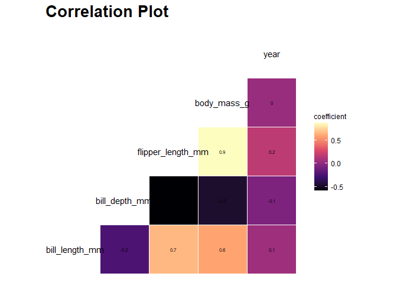
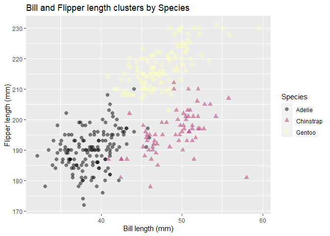

Exploratory Data Analysis is one of the key steps in a machine learning project. This package aims to make this process easy by providing python functions based on the ‘Altair’ package to plot four common types of plots with the magma color scheme. To maximize interpretability, the plots have defined color schemes (discrete, diverging, sequential) based on the kind of data they show.
Installation
The development version of the package can be installed from GitHub with:
# install.packages("devtools")
devtools::install_github("UBC-MDS/magmavizR")Usage
The magmavizR library can be loaded by using the commands below:
The four data visualization functions included in the package along with the usage are outlined below:
Boxplot
Returns a boxplot based on the data frame, a numerical feature to view the distribution of and a categorical feature to bucket data into categories. Additionally, there is a boolean option to facet the boxplots into separate charts.
boxplot(penguins_data, species, bill_length_mm, facet = TRUE)
Correlation plot
Returns a correlation plot based on the numerical features present in the data frame. Additionally, it will print the correlated numerical feature pairs along with their correlation values.
corrplot(penguins_data, print_corr = TRUE, title = "Correlation Plot")
Histogram
Returns a histogram based on the data frame and a numeric feature to plot on the x-axis. The y-axis will display the result of the following aggregating functions:
count
ncount
density
ndensity
width
histogram(penguins_data, bill_length_mm, "..count..")
Scatterplot
Returns a scatterplot based on the data frame and two numerical feature names passed as the required inputs. There are auxiliary inputs that provide the flexibility to:
Color code or change the shape of the data points on a categorical variable
Set a title to the plot, x-axis, y-axis and color legend
Change the opacity and size of the data points
Set the scale of the x-axis and y-axis to start from zero
scatterplot(penguins_data, bill_length_mm, flipper_length_mm, species, "Bill and Flipper length clusters by Species", 0.5, 2.5, "Bill length (mm)", "Flipper length (mm)", "", FALSE, FALSE, TRUE)
Fit within R ecosystem
Our package will build onto the existing features of ‘ggplot’ using the magma color scheme. It serves as an automated plotter and is a higher level implementation of it. Essentially it circumvents the need to code every single detail and allows the user to focus on the output. We came across two packages on CRAN that have a similar line of thought:
[quickplot] https://cran.r-project.org/web/packages/quickPlot/index.html - also a high level package based on ggplot that generates plots modularly.
[BoutrosLab.plotting.general] (https://cran.r-project.org/web/packages/BoutrosLab.plotting.general/index.html) - same motivation as this package, plots on a high level with a standard format. It does not use ggplot however.
Contributing
The primary contributors to this package are:
- Abdul Moid Mohammed
- Mukund Iyer
- Irene Yan
- Rubén De la Garza Macías
We welcome new ideas and contributions. Please refer to the contributing guidelines in the CONTRIBUTING.MD file. Do note that this project is released with a Code of Conduct. By contributing to this project, you agree to abide by its terms.
License
magmavizR was created by Abdul Moid Mohammed, Mukund Iyer, Irene Yan, Rubén De la Garza Macías. It is licensed under the terms of the MIT license.
Credits
magmavizR was created using the tutorial in The Whole Game.